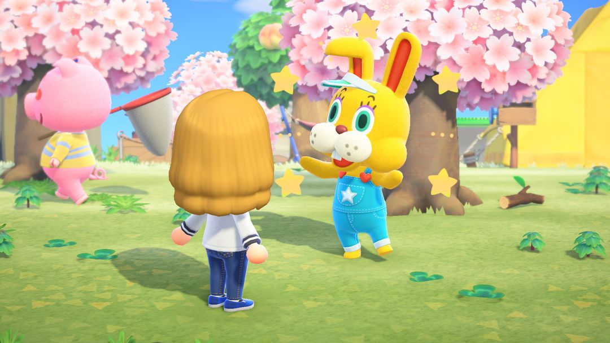
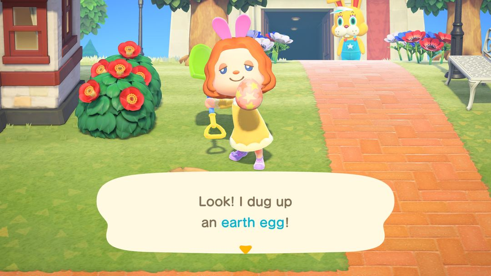
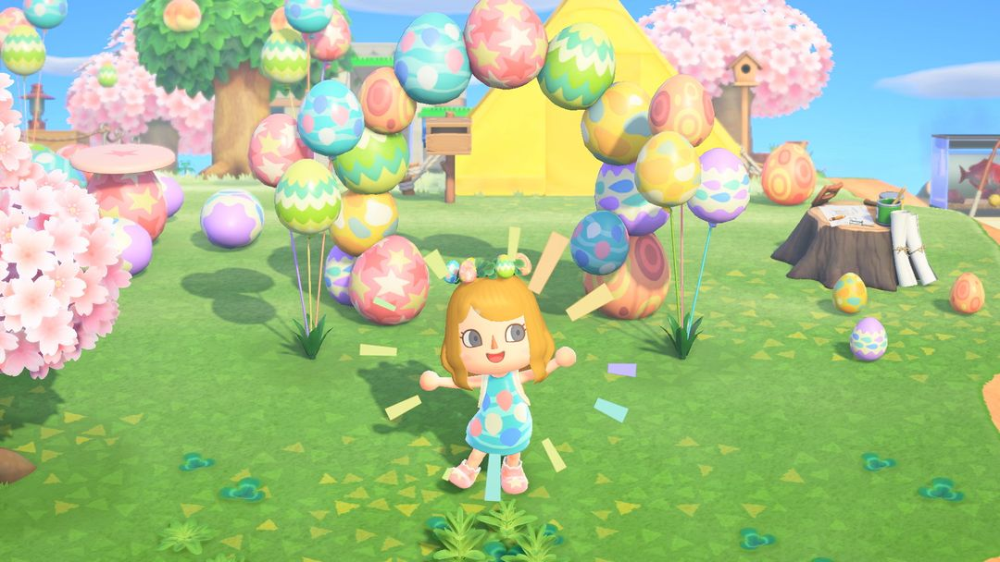
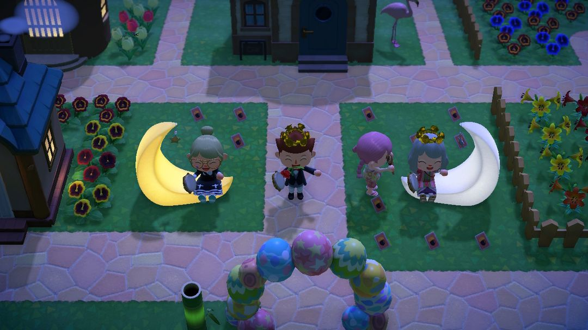

イースター：6種類のたまごの探し方とDIYレシピのコンプリート
イースターの1週間前から全8日間。ぴょんたろうは2回やってきます
イースターは全部で8日間。最初の7日間は島じゅうでたまごを集め、8日目がイースター当日（必ず日曜日）です。期間中は島に6種類のたまごが現れ、地面を掘る、木をゆらす、ふうせんを撃ち落とす、岩をたたく、釣りをする、木を切る、とそれぞれ出どころが違います。イベントの主役・ウサギのぴょんたろうは2回やってきて、初日にお願いをしに、最終日に成果を受け取りに来ます。
今回集めるDIYレシピはかなり多く、家具が15種類、服が18種類あります。家具のレシピはふうせん、メッセージボトル、住民からもらい、服のレシピは各たまごを一定数集めると手に入ります。イースター当日にぴょんたろうに6種類のたまごを1個ずつ渡すと、「イースターなバスケット」がもらえます。イースターの家具を全部作っていれば、さらに特別なDIYレシピを2つ教えてもらえます。最初の7日間は、各たまごを何個か残しておき、全部を家具に使わないようにしましょう。

ぴょんたろう（画像：任天堂、Nookipedia より）
01開催期間
ゲームのイースターは現実のイースター（復活祭）と同じ日で、毎年日付が変わります。春分（3月21日）のあとの最初の満月の次の日曜日で、必ず3月22日〜4月25日のどこかになります。北半球も南半球も同じ日ですが、南半球ではもう秋です。
イベントはイースターの1週間前の日曜日から始まり、最初の7日間がたまご集めの期間、8日目がイースター当日です。毎年の具体的な日付は、あつ森 サークルのイベントカレンダーで確認できます。
02ぴょんたろうが来る日
イベントの主役はウサギのぴょんたろう。期間中に2回やってきます。
初日は島のあちこちを歩き回っています。話しかけると「イースターなベッド」のDIYレシピを教えてくれて、イースターの家具を全部作ってほしいと頼まれます。その日に会えなくても大丈夫。日付が変わると、このレシピがポストに届きます。ベッドのレシピをすでに覚えている場合は、まだ持っていないレシピをランダムで1つ教えてくれます。
イースター当日は案内所の前で、たまごを渡しに来るのを待っています（くわしくは05で）。この日は住民たちもイースターの服に着替えます。
たまご集めの期間中、タヌキ商店にもイースターの商品が5つ並びます。「イースターなおかし」「イースターなガーデンフラッグ」「イースターなプランター」「イースターなトピアリー」「イースターなツリー」です。
036種類のたまごの出どころ
6種類のたまごはそれぞれ出どころが違いますが、いつもの島の日課をひととおりこなせば、だいたい全部出会えます。
| たまご | 手に入れ方 |
| じめんのたまご | 地面の星形のひび割れをスコップで掘る。たまご集め期間は1日最大10個、当日は最大15個 |
| はっぱのたまご | こうようじゅをゆらす |
| そらとぶたまご | イースター柄のふうせんをパチンコで撃ち落とす。自分の島だけ |
| いわのたまご | スコップかオノで岩をたたく |
| サカナのたまご | 川・池・海で中くらいの魚影を釣るとランダムで釣れる |
| ウッディなたまご | オノで木を切る。ヤシのきのほうがよく出る |
自分の島だけのそらとぶたまごを除けば、どのたまごも離島のほうが出やすいので、自分の島で足りない種類は離島で補いましょう。

じめんのたまごを掘り出したところ（英語版の画面）（画像：任天堂、Nookipedia より）
04DIYレシピのそろえ方
家具系15種類
家具系は全部で15種類。家具11点に、かべがみ・ゆかいた・ラグ・さくを加えたものです。いくつかの入手先から少しずつ集めます。イースター柄のふうせんを撃ち落とす、浜辺に流れ着くメッセージボトルを拾う、住民に教えてもらう、の3つです。たまご集めの期間は毎日このすべてをチェックすると早くそろいます。
服系18種類
服系は全部で18種類で、6種類のたまごそれぞれに「から」「ふく」「くつ」の3点があります。あるたまごを一定数集めると、そのたまごの服のDIYレシピをひらめきます。服のレシピはだれかにもらう必要はなく、たまごを集めるだけでOKです。18種類すべて覚えると、さらに「たまごのパーティーハット」と「たまごのパーティーワンピ」の2つも手に入ります。
よく作る家具に必要なたまご
よく作られる家具の材料をまとめました。たまごが足りるか、先に計算しておきましょう。
| アイテム | 材料 |
| イースターなベッド | じめん・いわ・はっぱ・ウッディ・そらとぶたまご各1 |
| イースターなアーチ | 5種類のたまご各2（サカナのたまごは不要） |
| イースターなテーブル | じめんのたまご4 |
| イースターなクロゼット | いわのたまご4 |
| イースターなドレッサー | はっぱのたまご4 |
| イースターなランプ | ウッディなたまご4 |
| イースターなスツール | サカナのたまご3 |
| イースターなウォールクロック | そらとぶたまご3 |
| ぴょんたろうのおきあがりこぼし | 5種類のたまご各4（サカナのたまごは不要） |
たまごをいちばん使うのはアーチとおきあがりこぼしで、サカナのたまご以外の5種類をそれぞれ2個・4個ずつ使います。この2つを作りたいなら、たまご集めの期間に多めにためておきましょう。

イースターなアーチやバルーンは屋外に飾ってもかわいい（画像：任天堂、Nookipedia より）
05イースター当日はぴょんたろうのところへ
イースター当日は案内所の前にいるぴょんたろうに会いに行きましょう。まず6種類のたまごを1個ずつ渡すと、お返しに「イースターなバスケット」をくれます。そのあとは、たまごの交換もしてくれます。同じ種類のたまご3個を、好きな種類のたまご1個と交換できるので、余っている種類と足りない種類をここで調整しましょう。
家具15種類に「イースターなバッグ」「イースターなかんむり」を加えた計17点をすべて作っていれば、当日「ぴょんたろうのおきあがりこぼし」のDIYレシピを教えてもらえます。おきあがりこぼしを作ると、さらに「イースターなステッキ」のDIYレシピももらえます。材料はぴょんたろうのおきあがりこぼし1個とほしのかけら3個です。バッグとかんむりのレシピは住民と話さないと手に入らないので、忘れずに集めておきましょう。
2年目からは、ぴょんたろうがイースターなステッキを直接プレゼントしてくれます。

筆者の島にずっと置いているイースターなアーチ（筆者のスクリーンショット）
06ちょっとしたコツ
サカナのたまごはいちばん手に入りやすく、いちばん使い道が少ない。中くらいの魚影を釣るといつでも釣れる可能性がありますが、使うのはスツール、イースターなバルーンB、サカナのたまごの服3点だけ。必要な分だけ残して、余りはそのまま売ってしまいましょう。
たまごが足りなければ離島へ。いわのたまごとウッディなたまごは離島でたくさん出ます。マイルりょこうけん1枚でひとっ走りすれば、かなり補えます。
当日はたまごをすぐ売らない。ぴょんたろうに3個→1個で交換してもらえば、余ったたまごを足りない種類に変えられます。売るのは交換が済んでからでも遅くありません。
水の上でふうせんを撃たない。ふうせんが水に落ちると拾えなくなります。陸の上空まで来てから撃ち落としましょう。
07アップデートでの変化
Ver.1.9.0から、イベント期間が12日間から8日間に短くなり、タヌキ商店でイースターの商品5つが売られるようになりました。Ver.2.0からはイースターなおかしが食べられるようになり、食べるとパワーがついて、木を掘り起こしたり岩を壊したりできます。Ver.3.0の更新内容にはイースターについての記述はありません。
あつ森 サークル · App Store で「あつ森 サークル」を検索